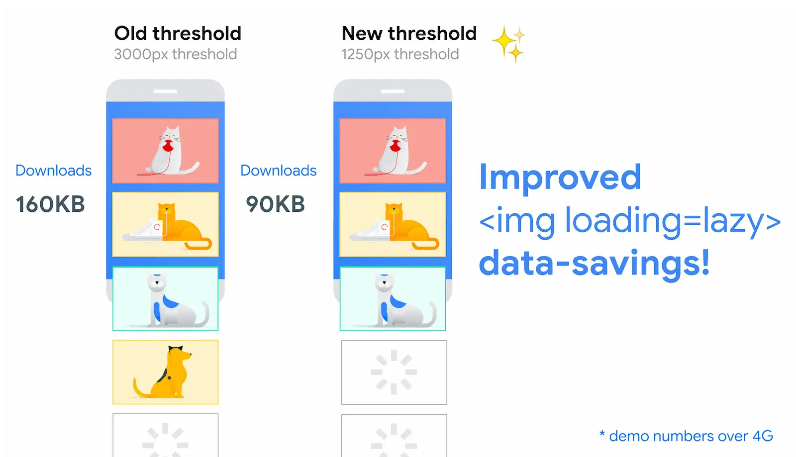

Short answer
Lazy loading defers images that are still far from the viewport.
The distance is a threshold, not a moral rule about all images. An image in the first screen is a candidate for the largest paint, so deferring it delays that paint. An image in a related-products rail far below can wait. SEO Health separates those two positions on the template.
Definition
The diagram shows that the distance at which browsers start a lazy image has changed over time and is not something a team should memorize as a ranking lever. What matters on a site is which images carry the loading attribute and where they sit. A threshold chart is a definition of browser behavior. It is not a measurement of Mika, of a customer, or of this marketing site.
What rendering changes for a crawler
Do not lazy-load the image that is the largest element in the first viewport.
Below-the-fold galleries, document thumbnails, and repeated logos in a footer are ordinary lazy-load candidates. The product hero, the first diagram in a manual, and the image that is the LCP element are not. A template default that adds loading=lazy to every image tag is a health defect even though the attribute is valid HTML. Fix the default, then re-audit one product URL and one article URL.

What to check
- The loading attribute on the first-viewport image
- Images far down the template that can wait
- A CMS or component default that marks every image lazy
- One product URL and one article URL after the change
- No claim that a particular pixel distance is a ranking rule
A practical example
A CMS preset lazy-loads every image, including the category banner that fills the first screen. The banner’s request starts only after layout discovers it is near. Removing the attribute from that one template image lets the request start with the document. The preset can stay for the thumbnail grid underneath.
What this does not claim
Correct lazy-load placement does not guarantee rankings or citations.
Where Mika Visibility files this
Mika Visibility treats rendering as an SEO Health question: can the important HTML be fetched and compared with and without JavaScript when the template depends on it. That comparison is not a GEO audit and not a market-coverage plan. Findings stay attached to sample URLs. A re-audit after the template change is how the team checks the repair.
The figure explains distance thresholds so the article can reject a one-attribute-for-every-image default.
FAQ
What does lazy loading defer?
Lazy loading defers images that are still far from the viewport.
Which image should not be lazy-loaded?
Do not lazy-load the image that is the largest element in the first viewport.
Does correct placement guarantee rankings?
Correct lazy-load placement does not guarantee rankings or citations.
Next step
Run a structured SEO + GEO audit to see health findings, growth gaps, and a blueprint you can act on.
Clearer entities, answers, evidence, and context make pages easier to understand and reference. Results in any answer product are not guaranteed.